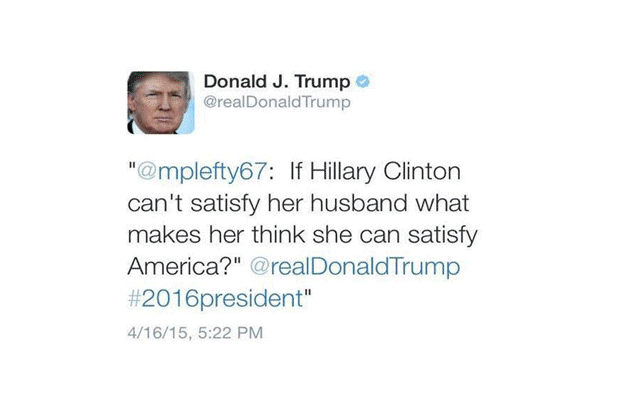
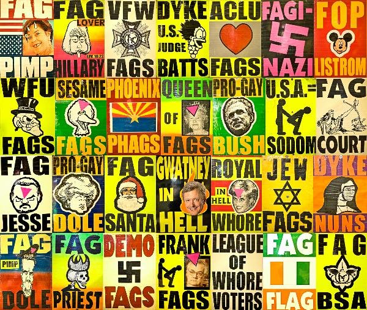
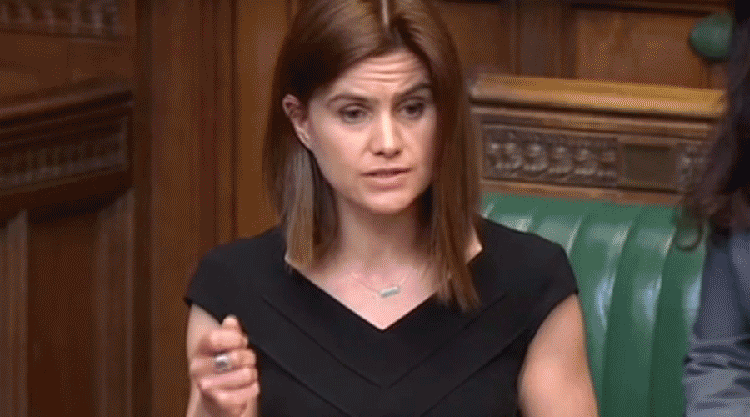
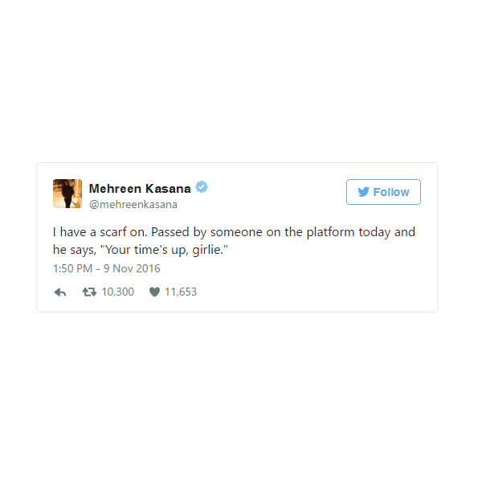

Hábitos tecnológicos
Até que ponto as redes sociais moldam quem nós somos? - Black Mirror S03E01 - Nosedive.
Influências sociais do
“We start from the observation that when users evaluate content contributed by a fellow user (e.g., by liking a post or voting on a comment) they also implicitly evaluate the author of that content, and that this can lead to complex social effects.” - Justin Cheng, How Community Feedback Shapes User Behavior” Stanford University, p. 9. https://cs.stanford.edu/people/jure/pubs/disqus-icwsm14.pdf
Efeito Borboleta das redes sociais
“Whether or not the demonstrations in Brazil or Hong Kong or the uprisings of the Arab Spring would have happened without social media, such platforms clearly played an important role in shaping the kind of transition that followed.” - Collective Action Goes Digital, “Could people mobilize today without social media?”, Princeton University, p. 20. http://press.princeton.edu/chapters/s10582.pdf
Manipulação da percepção social.
@louise.delage.Conta falsa criada no instagram para alertar sobre os perigos do alcoolismo.
Ponto de vistas relativos
“Media [...] determines, shape, molds the lens through which I view the world. [...] In general therms, media determines what can be said. Media determines who can say it, how it can be said, and mostly importantly, who can hear it.” - Tim Weninger, Changing the hive mind, TEDx Talks. https://www.youtube.com/watch?v=IVsz5xFd3qU&ab_channel=TEDxTalks

Economia em torno do viral
The next big thing in tech is... - Mark Zuckerberg no Mobile World Congress.
Números contam, qualidade não
“55 percent of the people who visit a Web page stay for less than 15 seconds. Yet the site with the most traffic wins, regardless of how fleeting that traffic might be.” - Frank Rose, The Attention Economy, The Milken Institute Review, p. 45. http://www.frankrose.com/The_Attention_Economy.pdf
O poder da media
"In the tech world, there’s even a small industry built around Apple product rumors. Websites such as MacRumors, Cult of Mac, AppleInsider, the Boy Genius Report, and others compete to source and report rumblings about the next iPhone, iPad, or Apple Watch. These claims aren’t without effect. A 2014 study of merger rumors in the financial press found that “rumors in the press have large stock price effects.” Companies, like J.C. Penney, have seen their stock prices drop after rumors took hold on message boards, the trading floor, Twitter, and elsewhere." - Craig Silverman, “Literature Review: What We Know About the What, How, and Why of Rumors “ , Lies, Damn Lies, and Viral Content, Columbia Journalism School, p. 17 - 18. http://towcenter.org/wp-content/uploads/2015/02/LiesDamnLies_Silverman_TowCenter.pdf

Conexão virtual, não humana
Technology appeals to us most where we are most vulnerable. - Facebook: Connecting the world takes every one of us.https://www.youtube.com/watch?v=kfuvk6C97rg&ab_channel=Facebook
Seres (anti)sociais
“We expect more from technology and less from each other. Technology appeals to us most where we are most vulnerable. We are lonely but we are afraid of intimacy. The illusion of companionship without the demands of friendship.” - Sherry Turkle, Connected, but alone?, TEDx Talks.https://www.ted.com/talks/sherry_turkle_alone_together#t-793310
Consequências psicológicas
Existe uma enorme necessidade de controle de tudo. A constante conexão digital (que não implica conexão humana) cria uma constante necessidade de não estar sozinho, resultando em problemas de ansiedade e depressão. - + Conexões digitais - Relações pessoais

Egocentrismo
Redes sociais e o Ego. - Mark Hansen and Ben Rubin: Listening Post, Real-Time Data Responsive Environment 2001.
Sugarcoated truth
Ironicamente, por mais que os criadores das atuais redes sociais defendam que elas foram criadas com a intenção de conectar as pessoas, elas tendem a enfatizar o ego. Muito do que seria suposto ser uma preocupação, facilmente se transforma em uma exposição do quão o “eu” é algo, seja intelectual, caridoso, preocupado com questões sociais ou politicas, simplesmente por compartilhar algo do determinado gênero.

Novas medias, novos valores.
Social Roulette tem 1 em 6 chances de deletar a sua conta. Basta logar e jogar. “A game of chance where your identity is the grand prize”.http://www.socialroulette.net/
Re construção de valores
Novas medias, novos valores. As redes sociais passaram a ter tanta importância em nossas vidas em que a ideia de perder elas chega a ser aterrorizante. Tanto da nossa vida passa a depender delas que acabam por se tornar extensões do nosso ser, obtendo valores iguais, se não maiores, do que membros ou sentidos. Até que ponte apostaríamos a vida delas?
Quantidade vs. Qualidade
Twitter Matrix é um site onde se visualiza tweets de forma inspirada no filme Matrix. A cena se torna extremamente ironica com algumas mensagens e com a quantidade de emojis.https://konard.github.io/twittermatrix/messages.html
Informações perdidas
De todos os posts, tweets, e publicações em redes sociais, quantas destas carregam uma informação relevante, ou que merece um destaque, seja qual for o tema? Quantas deles são repetidas, semelhantes, e sem sentido? Por mais que exista qualidade em algumas destas publicações, a quantidade ofusca o anterior, e acabamos por nos encontrar em um mar de emojis, textos em línguas incompreensíveis, e informações inúteis.

Bombardeamento de informação
Emoji Wall é um site onde se milhões de emojis piscam por segundo, alterando posições e tamanhos, criando uma paisagem com determinados padrões, mas que ao detalhe, é sempre diferente.http://kitasenjudesign.com/work/72/
Velocidade é relativa
Somos atacados por imagens, gifs, vídeos, emojis, anúncios, emails, e cada vez mais parece nos afetar menos. Estamos, involuntariamente, adaptando-nos a estas numerosas informações que consumimos, estando aptos a interpretar novas codificações, memes, formatos, e tecnologias. Toda esta descarga de informação está alterando por completo como aprendemos, percebemos, comunicamos, e como interagimos, a tal modo, que de pouco em pouco, passemos a olhar o tempo de forma completamente diferente.

O peso de 150 caracteres
A relevância de um tweet é determinada por quem o publica. - Principalmente quando se é um lider de uma das maiores potências mundiais.

Racismo nunca deixou de existir
Safe-spaces para o discurso de ódio. - A mais famosa - e quase cômica - igreja dona da frase "God hates [non-white thing]!"

Expressões concretas
O mundo racista pós-trump. - As reações imediatas após a vitória de Donald Trump são tão caricatas que se tornam surreais.
Reflexo político
Who is ok, who is not ok. - A crise imigratória europeia põe em questão quem é bem-vindo.
Media como arma
Media is the primary weapon to bring terror. - But also, weirdly, a huge source of "entertainment".
Racismo vs opinião
Bigotry is not opinion. - And racist ideals are not facts.

Expressões concretas extremas
Who will be next? - A crescente volta (da exposição na media) de assassinatos de políticos influentes.
